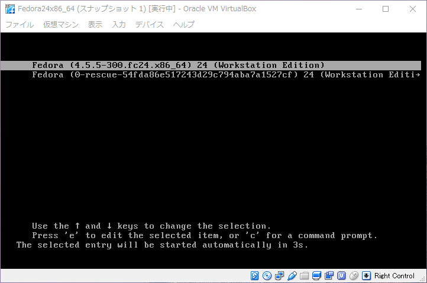
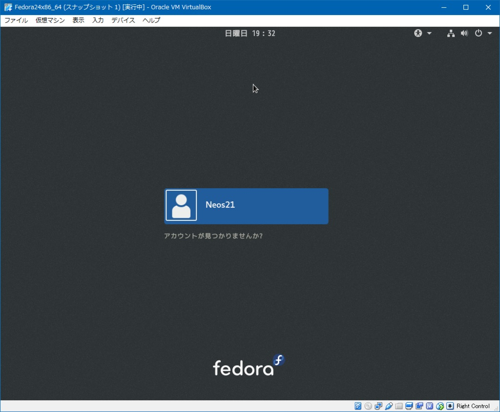
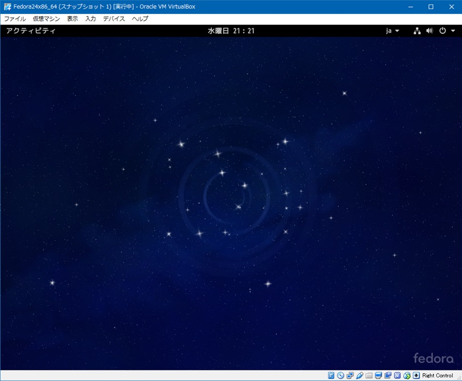
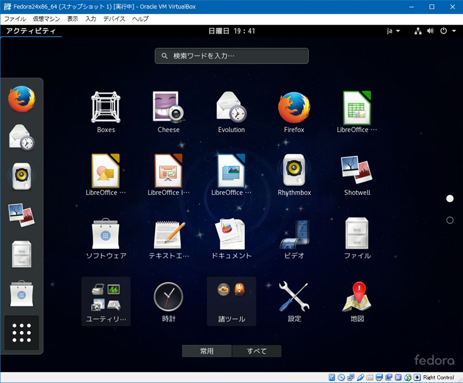
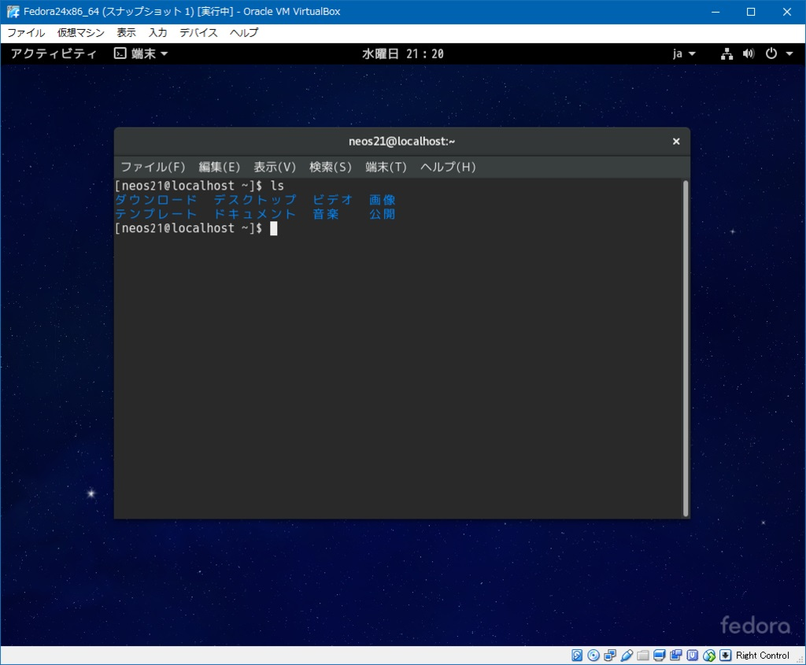

Windows 上から VirtualBox で Linux 入門！Fedora 24 Workstation を動かしてみる
Windows マシン上で VirtualBox を使って、Fedora 24 Workstation を動作させてみる記事。
対象読者
- Windows マシンしか持ってないけど Linux を触ってみたい
- でも Linux って GUI ないんでしょ？コマンドしか打たない OS とか分かんないです…
- Linux っていっぱい種類あるじゃん！どれにしたらいいの？
といった人をターゲットにした。自分も割と最近までこうだったけど、ホントに初心者向けに書いてくれてる記事が全然ないので、自分で調べてやってみた結果を簡単にまとめる。
ゴール
GUI 環境を持つ Linux OS を、Windows 上に作った仮想環境で動作させる。
Windows 上で動く仮想環境なので、デュアルブートとかそういう設定はなし。
GUI 環境を持つ Linux もあるんだー、ってところが既に意外な人もいるかもしれない。Windows とも Mac とも違うインターフェースだけど、無料の OS でもこんなのがあるんだ！を実感してもらいたく。
もう少し詳しく
VirtualBox 上で Fedora を動かす。
VirtualBox というのが、Windows 上に他の OS が動く、仮想マシン環境を作るソフト。フリー。
Fedora (フェドラ) というのは、今回チョイスした 、GUI 環境がある Linux OS。Ubuntu とかでも良かったのかもしれないけど、初期設定が気楽そうなのはこれかなーと思ってこれにした。
ではではいよいよ説明スタート。
VirtualBox のダウンロード・インストール
以下のサイトより VirtualBox をダウンロードする。
「VirtualBox 5.1.2 for Windows hosts」横の「x86/amd64」をクリックして VirtualBox-5.1.2-108956-Win.exe をダウンロードする (バージョンは変わっていたら適宜読み替えること)。
ダウンロードができたらファイルを実行してインストールを始める。指示に従ってデフォルト設定のままインストールすれば OK。
Fedora のダウンロード
上のサイトより、Fedora 24 Workstation を選択して、Fedora-Workstation-Live-x86_64-24-1.2.iso をダウンロードする。これが OS の CD イメージ。
VirtualBox での設定
VirtualBox で、この CD イメージを起動ディスクにして、まずはディスク起動モードで Fedora を起動させるための設定をする。
- VirtualBox を起動する。
- 「新規」をクリックする。
- 「名前とオペレーティングシステム」で名前 : 「
Fedora24x86_64」などと入れる。
タイプ : Linux、バージョン : Fedora (64-bit) に自動で設定されると思うので「次へ」をクリックする。 - 「メモリーサイズ」は緑ゾーン限界近くまで上げて「次へ」をクリックする。
- 「ハードディスク」は「仮想ハードディスクを作成する」を選択して「作成」ボタンをクリックする。
- 「ハードディスクのファイルタイプ」は「VDI (VirtualBox Disk Image)」を選択して「次へ」をクリックする。
- 「物理ハードディスクにあるストレージ」は「可変サイズ」を選択して「次へ」をクリックする。
- 「ファイルの場所とサイズ」で場所はデフォルト (Users 下の VMs にできる)。
サイズは最低でも 10GB は Fedora OS の動作のために必要なので、15〜25GB 程度、用途に応じたサイズを設定して「作成」ボタンをクリックする。
これで、仮想 PC の定義が出来上がった。続いて詳細設定をする。これらを設定しておかないと、マウスを動かしてもガクガクでもっさりしまくる。
- 作成した Fedora を選択して「設定」をクリックする。
- 「ディスプレイ」の「ビデオメモリー」を最大まで拡張する。
まず「ディスプレイの数」を最大まで増やす。すると「ビデオメモリー」の上限値が開放されるので、「ビデオメモリー」を緑ゾーンの限界まで拡張して「OK」をクリックする。
再度「設定」を開き、最大まで増やした「ディスプレイの数」を「1」に戻す。
こうすれば、ビデオメモリーは当初の上限値を突破した最大値に設定できる。 - 同じく「ディスプレイ」の「3D アクセラレーションを有効化」にチェックを入れる。
- 「システム」の「マザーボード・チップセット」を「PIIX3」から「ICH9」に変更し、「アクセラレーション」を「デフォルト「から「KVM」に変更する。
- 「ストレージ」の「コントローラー : IDE」下の CD を選択し、右側の「仮想光学ディスクファイルを選択」で、先ほどダウンロードした Fedora の ISO ファイルを選択する。これが仮想マシンの起動ディスクとして認識される。
ここまでやれば、「起動」ボタンを押して Fedora が起動できるようになる。
Fedora をハードディスクにインストールする
仮想マシンの HDD は、VDI ファイルの作成時に 15〜25GB 程度で領域を確保したかと思う。この領域に Fedora OS をインストールし、起動ディスク (ISO イメージファイル) なしでも起動できるようにする。
- VirtualBox から「起動」をクリックして Fedora を起動する。
- Test this media & Start Fedora 24 を選択してみる。なにやらコンソールがゴロゴロ動くので待つ。
- しばらくすると、GUI で「Welcome to Fedora」という画面が出る。「Try Fedora」と「Install to Hard Drive」の2つが表示されているので後者を選択する。
ここで OS の初期設定を行う。
- 言語は「日本語」が勝手に選ばれていた。そのまま。
- キーボード設定を見ておく。」日本語」になっていれば OK。
- インストール先のディスクを、仮想マシンのハードディスクを選択する。
- ネットワークは当方環境だと何もせずとも勝手に繋がっていた。
ハードディスクへのインストールを開始する。
その最中に Root パスワードを設定し、ユーザを作成する。
Root パスワードというのは、OS 全体に関わる操作の時に使用する最強なパスワード、って感じ。だからルート。
インストールが完了したら、その状態で VirtualBox の「仮想マシン」メニューから「設定」を開き、「ストレージ」の「コントローラー : IDE」にマウントした ISO イメージを外す。これをしないと、再起動後も CD ブートしてしまう。CD ドライブ自体はこのあと使うので空で残しておく。
CD イメージがアンマウントできたら Fedora を終了させ、再度「起動」する。
すると、
- Fedora (
4.5.5-300.fc24.x86_64) 24 (Workstation Edition) - Fedora (0-rescue-54fda……) 24 (Workstation Edition)
という2つの選択肢が出てくるが、上を選択して Enter。下のは Rescue モードとかいう起動モードらしい。

少し待つと、先ほど作成したログインアカウントが画面上に出てくるので、それを選択してログインする。

デスクトップはこんな感じ。

左上の「アクティビティ」が、Windows でいうスタートメニューみたいなもの。デフォルトでこれぐらいのアプリが入っている。ブラウザは Firefox、オフィススイートに LibreOffice が入ってたりするので、とりあえずいい感じに使えるのでは。

「アクティビティ」内にある「端末」というのが、つまりターミナルだ。Linux コマンドを叩きたい時はここからドウゾ。

Windows デスクトップを含めた画面キャプチャはこんな感じ。

ひとまず、これで Fedora 環境が構築できたということになる。
GuestAdditions
GuestAdditions というものを入れるとパフォーマンスが向上するので、入れておこう。
「デバイス」から「GuestAdditions CD イメージの挿入」と選択し、先ほどアンマウントした Fedora OS の ISO イメージを選択する。するとターミナルが立ち上がって何やらゴソゴソしていくので、待つ。再起動すれば終わり。
マシンの終了時は画面右上の電源マークから。
以上。
以後は VirtualBox を立ち上げて Fedora を選択して「起動」とするだけ。
これであなたも、素敵な Linux ライフの第一歩を！
参考
- Fedora19をVirtualBoxにGUIでインストールしてみた！ | トーハム紀行
- 今回の記事のベースはコレ。これを基に自分でもやってみた結果を、再度記事に起こした次第。
- VirtualBox 最大パフォーマンスでUbuntu環境を構築する - ほりべあぶろぐ
- Mac OSX に Ubuntu 環境を作る解説ページ。ビデオメモリーの増やし方、「システム」設定内容を参考にしました。
- http://fedorajp.jimdo.com/%E5%B0%8E%E5%85%A5-%E8%A8%AD%E5%AE%9A/
- Fedora 初期設定はこちらを参照。
- VirtualBoxでのスクリーンショットの撮り方 - 揮発性のメモ２
-
右コントロールを押して一旦キャプチャを解除すると、撮れる。
-
- サービス終了のお知らせ - NAVER まとめ
- パフォーマンス設定を参考に。